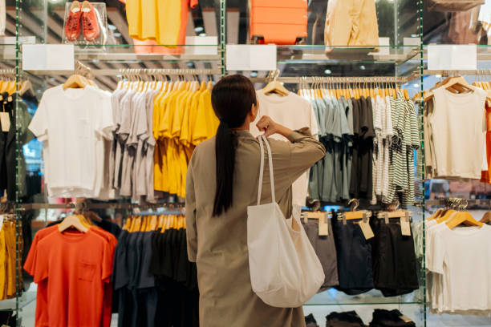
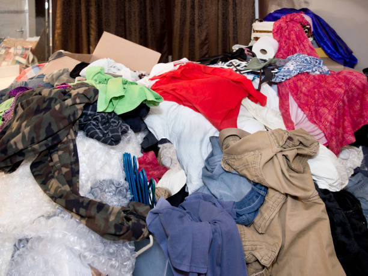
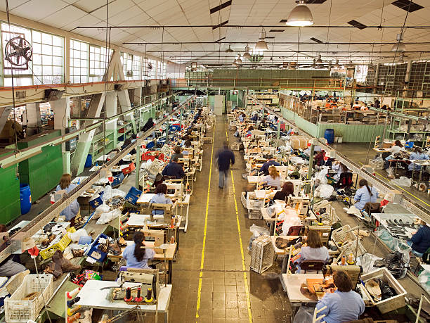
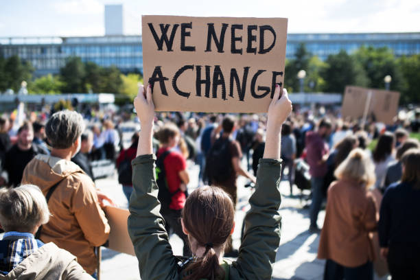

Fast Fashion & Clothing Waste
How what we consume is costing the planet - it’s time to trade fast trends for a lasting future.
What is Fast Fashion?

Fast fashion produce thousands of new styles every week at rock - bottom prices. (Source: iStockPhoto)
Fast fashion is the rapid production of cheap, trendy clothes designed to be worn and discarded quickly. Instead of traditional seasonal releases, brands like Shein, Zara, and H&M now launch new collections weekly, copying runway trends within days and selling them at extremely low prices made possible by cheap labour. Fueled by social media platforms like TikTok, where trends change overnight, and haul culture thrives, consumers are encouraged to buy more than ever, yet wear each item less, turning fashion into a cycle of constant consumption and waste.
Fast fashion is not just an industry - it is a habit we have been sold, one scroll at a time.
The Environmental Impact
Fast fashion is one of the most environmentally destructive industries on Earth. From raw material production to disposal, every stage of a garment’s life cycle leaves a massive footprint that the planet is struggling to absorb.
⚠️ The fashion industry produces more carbon emissions than all international flights and maritime shipping combined - yet nobody talks about it.

Millions of tonnes of clothing end up in landfill every year, releasing toxic chemicals into the soil and water. (Source: iStockPhoto)
The Human Cost
Behind every low price is a hidden reality. Fast fashion depends on millions of workers whose labour is undervalued, underpaid, and often invisible. The true cost isn’t on the price tag - it’s carried by the people making the clothes.

Garment workers with terrible working conditions. (Source: iStockPhoto)

Protesters protesting for fair wages and safer working conditions. (Source: iStockPhoto)
Workers
Most garment workers are young women, often supporting entire families. Many earn below a living wage, working exhausting hours in tightly controlled environments where even basic breaks are restricted. Long shifts and constant pressure to meet quotas are the standard, not the exception.
Child Labour
In some parts of the supply chain, children are still involved in producing raw materials like cotton. Poverty and demand for cheap production push families to rely on child labour, keeping cycles of forced labour alive.
Unfair Pay
The gap between workers and executives is extreme. Garment workers are paid just enough to survive - while company leaders earn in days what workers may never see in a lifetime. Speaking out often risks losing their only source of income.
What We Can Do as Students
The fashion industry wants you to believe that change starts in boardrooms and government offices - but it doesn't. It starts in your wardrobe, your campus and your daily choices. As students we are one of the most targeted groups by fast fashion brands, which means we also have enormous power to push back.
"Small choices in your wardrobe can create global impact."Practical Actions You Can Take Today
- Shop second-hand - explore charity shops, vintage stores, or apps
- Take part in a Campus Swap Shop - exchange clothes, books, or items with others instead of buying new
- Buy less, choose better - focus on quality pieces you’ll wear more often
- Wash smarter - lower temperatures and less frequent washing save energy and protect clothes
- Repair and reuse - simple fixes can extend the life of your clothes
- Donate instead of dumping - give unwanted items a second life
- Be curious - research brands and support those with ethical practices
- Speak up - raise awareness and start conversations in your community
The hands that make our clothes are often the ones paid the least - while the industry profits the most.
Making an Impact
Change does not require perfection. It requires participation. Every single choice you make as a consumer sends a signal to the fashion industry about what you value and right now, millions of students around the world are sending that signal loud and clear.
The Power of Collective Action
When people unite around shared goals, change happens faster. Groups, online communities, and local initiatives are promoting swaps, repairs, and sustainable policies.
Fashion brands are starting to respond with recycling programs, sustainable materials, and supply chain transparency. Every choice - buying second-hand, quality items, or ethical brands - sends a strong message: you support a fashion industry that values people and the planet.
The fashion industry follows trends - but consumers create them.